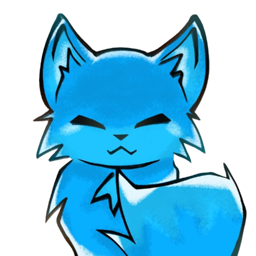

FAQ
OrionFox est une entreprise française de création de jeux vidéo.
Je suis YoroE, membre et fondateur d’OrionFox Games. J’ai 20 ans et je développe des jeux par passion.
Vous pouvez nous retrouver sur Instagram.
Pour le moment, aucun. Mais très prochainement...
Nous allons proposer de nombreux jeux. Cela ira des Idle Games aux Choice Games, pour finir avec des jeux de Survival. Nous ferons le nécessaire pour proposer un maximum de contenu.
Mystère...
Créer est ce que j’admire le plus au monde. Avoir la capacité de montrer aux autres ce qui te passe par la tête. Les jeux vidéo sont la plateforme qui me permet d’exprimer tout cela. Des idées folles pour des joueurs, je l’espère, aussi fous.
Nous sommes situés dans la commune de Périgueux, en Dordogne. Cependant, l’adresse exacte n’est pas encore définie.
Aucun jeux disponible pour le moment...